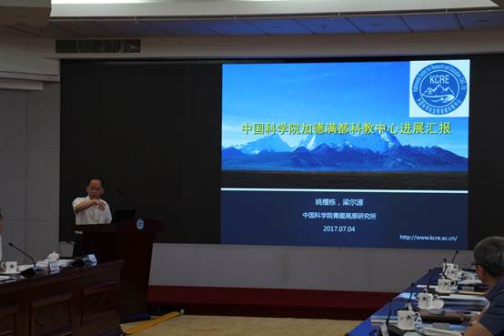
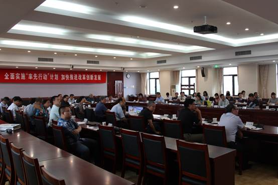
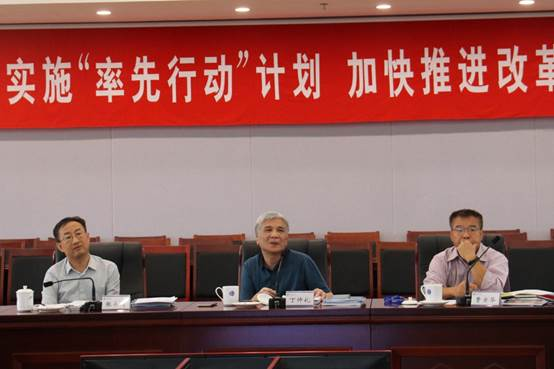

7月4日，“中国科学院加德满都科教中心”（以下简称“加德满都中心”）与“中国-斯里兰卡联合科教中心”（以下简称“中斯中心”）第一届理事会第三次会议在院部联合召开，中科院副院长、国科大校长、加德满都中心和中斯中心第一届理事会理事长丁仲礼院士出席会议。国际合作局曹京华局长、国科大王艳芬副校长、前沿科学与教育局张永清副局长、条件保障与财务局聂常虹副局长，两个中心理事会成员，依托和共建单位所领导、管理骨干和专家共40余人参加了会议。会议由曹京华局长主持。
会上，加德满都中心主任姚檀栋院士汇报了中心建设概况，执行主任梁尔源研究员汇报了2016年以来的工作进展以及未来的发展规划；成都山地所邓伟研究员展示了南亚山地灾害与可持续发展相关工作进展；青藏高原所副所长赵平就基础设施建设最新进展及存在问题进行了说明；财务处处长康志焕和执行主任梁尔源分别介绍了中心的经费管理制度、2016和2017年度经费使用情况，以及2018年度经费预算方案，并提请理事会审议。
与会领导专家充分肯定了加德满都中心一年来取得的成绩，一致认为中心聚焦前沿科学问题，在硬件建设、科学研究、人才培养等方面已经取得了很好的进展，为国际计划和不同渠道项目的申请发挥了平台支撑作用。各位理事针对加德满都中心下一步重点开展的工作、人才培养、为地方服务等方面提出若干建议。曹京华局长特别指出，成立加德满都中心山地可持续发展分中心，体现了山地所在山地灾害和山区发展等方面的特色，将进一步加强加德满都中心服务地方民生方面的平台作用。理事长丁仲礼副院长充分肯定了加德满都中心近一年来各项工作进展，并对境外机构的发展（包括加德满都中心）提出了五条指导性建议：第一，境外机构做基础研究的同时要注重为地方服务，解决当地关注的民生问题；第二，不仅要联合国内、院内的合作单位，也要加强与当地科教机构的合作；第三，境外机构要做好长远规划，稳步发展；第四，要通过多种渠道争取经费，并得到当地政府的支持；第五，建立境外机构是中科院历史上的创新行动，应该进一步扩大影响力，为我国“一带一路”倡议提供有力支撑，服务当地民生。

中心主任姚檀栋院士汇报加德满都中心建设概况

会议现场

丁仲礼副院长作总结发言